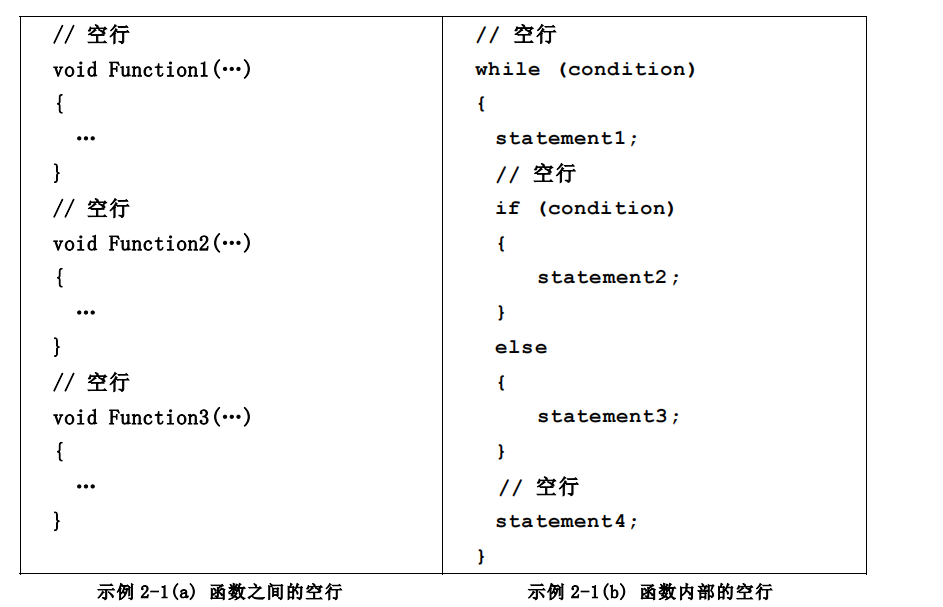
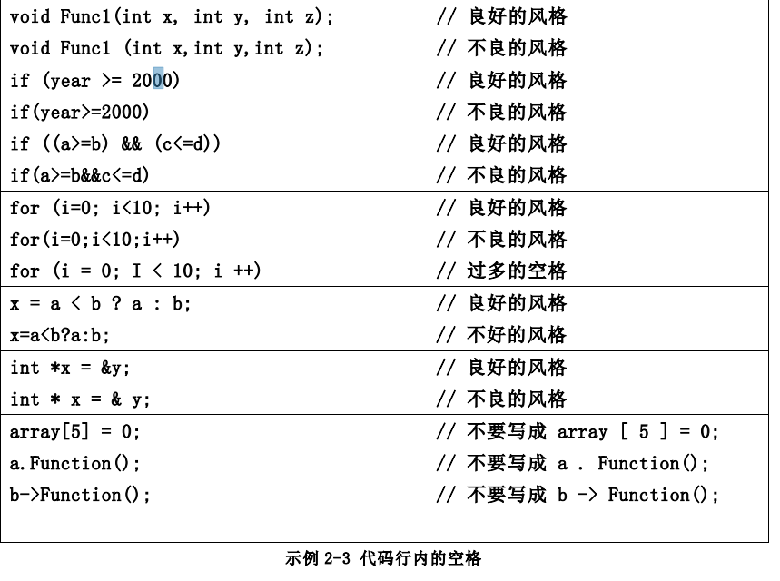
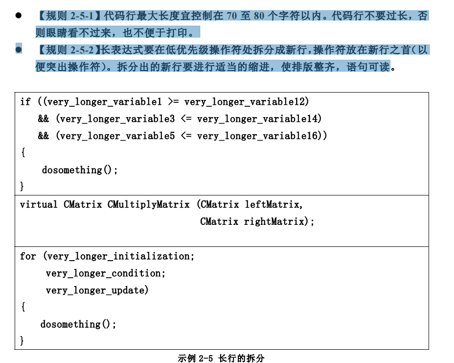

High Quality of C_Cpp programming in formats(1)
高质量的C/C++规程规范
笔记篇
每个C++/C 程序通常分为两个文件。一个文件用于保存程序的声明（declaration），这被称之为头文件，另一个文件用于保存程序的实现，这是被称之为定义文件。
为此，我们选择了使用后缀来作为文件的区分。在C/C++中，我们选择使用.h/.hpp来作为头文件，而.c文件是C语言源文件，.cpp是C++源文件.
下面是头文件的开门格式
头文件的结构
三个基本结构: 开头的的版权和版本声明
/*
*Copyright (c)
* All rights reserved.
*
* 文件名称：filename.h
* 文件标识：见配置管理计划书
* 摘 要：简要描述本文件的内容
*
* 当前版本：1.1
* 作 者：输入作者（或修改者）名字
* 完成日期：2001年7月20日
*
* 取代版本：1.0
* 原作者 ：输入原作者（或修改者）名字
* 完成日期：2001年5月10日
*/ 预处理块。
#define ...
#ifdef ...
#ifndef ...
#endif 函数和类结构声明等。
// Some announcements hear假设头文件名称为 graphics.h，头文件的结构参见示例 1-2。
【规则 1-2-1】为了防止头文件被重复引用，应当用ifndef/define/endif 结构产生预
处理块。
【规则 1-2-2】用 #include
【规则 1-2-3】用 #include “filename.h” 格式来引用非标准库的头文件（编译器将
从用户的工作目录开始搜索）。
【建议 1-2-1】头文件中只存放“声明”而不存放“定义”
在 C++ 语法中，类的成员函数可以在声明的同时被定义，并且自动成为内联函数。这虽然会带来书写上的方便，但却造成了风格不一致，弊大于利。建议将成员函数的定义与声明分开，不论该函数体有多么小。
【建议 1-2-2】不提倡使用全局变量，尽量不要在头文件中出现象 extern int value 这
类声明。
// 版权和版本声明见示例 1-1，此处省略。
#ifndef GRAPHICS_H // 防止 graphics.h 被重复引用
#define GRAPHICS_H
#include <math.h> // 引用标准库的头文件
…
#include “myheader.h” // 引用非标准库的头文件
…
void Function1(…); // 全局函数声明
…
class Box // 类结构声明
{
…
};
#endif 早期的编程语言如 Basic、Fortran 没有头文件的概念，C++/C 语言的初学者虽然会
用使用头文件，但常常不明其理。这里对头文件的作用略作解释：
（1）通过头文件来调用库功能。在很多场合，源代码不便（或不准）向用户公布，只要向用户提供头文件和二进制的库即可。用户只需要按照头文件中的接口声明来调用库功能，而不必关心接口怎么实现的。编译器会从库中提取相应的代码。
（2）头文件能加强类型安全检查。如果某个接口被实现或被使用时，其方式与头文件中的声明不一致，编译器就会指出错误，这一简单的规则能大大减轻程序员调试、改错的负担
在目录结构上:如果一个软件的头文件数目比较多（如超过十个），通常应将头文件和定义文件分别保存于不同的目录，以便于维护。
例如可将头文件保存于 include 目录，将定义文件保存于 source 目录（可以是多级
目录）。
如果某些头文件是私有的，它不会被用户的程序直接引用，则没有必要公开其“声
明”。为了加强信息隐藏，这些私有的头文件可以和定义文件存放于同一个目录
尽可能良好的书写程序
空行起着分隔程序段落的作用。空行得体（不过多也不过少）将使程序的布局更加清晰。空行不会浪费内存，虽然打印含有空行的程序是会多消耗一些纸张，但是值得。所以不要舍不得用空行。

于是可以看到,在程序的逻辑模块之间, 我们采用空格来表明逻辑的独立性
【规则 2-2-1】一行代码只做一件事情，如只定义一个变量，或只写一条语句。这样
的代码容易阅读，并且方便于写注释。
【规则 2-2-2】if、for、while、do 等语句自占一行，执行语句不得紧跟其后。不论
执行语句有多少都要加{}。这样可以防止书写失误。
【建议 2-2-1】尽可能在定义变量的同时初始化该变量（就近原则）
如果变量的引用处和其定义处相隔比较远，变量的初始化很容易被忘记。如果引用
了未被初始化的变量，可能会导致程序错误。
2.3 代码行内的空格
【规则 2-3-1】关键字之后要留空格。象 const、virtual、inline、case 等关键字之
后至少要留一个空格，否则无法辨析关键字。象 if、for、while 等关键字之后应留
一个空格再跟左括号‘（’，以突出关键字。
【规则 2-3-2】函数名之后不要留空格，紧跟左括号‘（’，以与关键字区别。
【规则 2-3-3】‘（’向后紧跟，‘）’、‘，’、‘;’向前紧跟，紧跟处不留空格。
【规则 2-3-4】‘，’之后要留空格，如 Function(x, y, z)。如果‘;’不是一行的结束
符号，其后要留空格，如 for (initialization; condition; update)。
【规则 2-3-5】赋值操作符、比较操作符、算术操作符、逻辑操作符、位域操作符，
如“=”、“+=” “>=”、“<=”、“+”、“*”、“%”、“&&”、“||”、“<<”,“^”等二
元操作符的前后应当加空格。
【规则 2-3-6】一元操作符如“!”、“~”、“++”、“—”、“&”（地址运算符）等前后不
加空格。
【规则 2-3-7】象“［］”、“.”、“->”这类操作符前后不加空格。
【建议 2-3-1】对于表达式比较长的 for 语句和 if 语句，为了紧凑起见可以适当地去
掉一些空格，如 for (i=0; i<10; i++)和 if ((a<=b) && (c<=d))

对齐
【规则 2-4-1】程序的分界符‘{’和‘}’应独占一行并且位于同一列，同时与引用
它们的语句左对齐。
【规则 2-4-2】{ }之内的代码块在‘{’右边数格处左对齐。
长行的拆分
【规则 2-5-1】代码行最大长度宜控制在 70 至 80 个字符以内。代码行不要过长，否则眼睛看不过来，也不便于打印。
【规则 2-5-2】长表达式要在低优先级操作符处拆分成新行，操作符放在新行之首（以便突出操作符）。拆分出的新行要进行适当的缩进，使排版整齐，语句可读

修饰符 和 ＆ 应该靠近数据类型还是该靠近变量名，是个有争议的活题。
若将修饰符 靠近数据类型，例如：int x; 从语义上讲此写法比较直观，即 x
是 int 类型的指针 ,上述写法的弊端是容易引起误解，例如：int x, y; 此处 y 容易被误解为指针变量。虽然将 x 和 y 分行定义可以避免误解，但并不是人人都愿意这样做。
【规则 2-6-1】应当将修饰符 和 ＆ 紧靠变量名
例如：
char name;
int *x, y; // 此处 y 不会被误s解为指针！